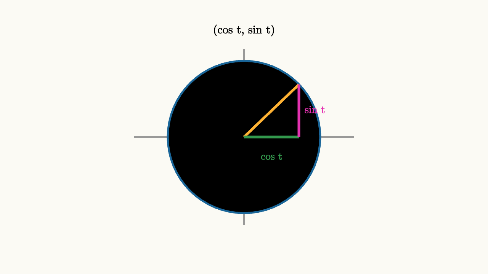

Trig Begins With Rotating Coordinates
The unit circle turns trigonometry into a coordinate story. Pick an angle. Walk from the origin one unit in that direction. The point you reach has coordinates
Cosine is the horizontal coordinate. Sine is the vertical coordinate. This one sentence explains signs, special angles, periodicity, and the most important identity.

source
background = [0.985, 0.98, 0.955, 1]
camera = Camera(4b)
let p = [1.25 * 0.72, 1.25 * 0.69, 0]
mesh diagram = block {
. stroke{GRAY, 2} Line(start: [-1.8, 0, 0], end: [1.8, 0, 0])
. stroke{GRAY, 2} Line(start: [0, -1.45, 0], end: [0, 1.45, 0])
. stroke{BLUE, 3} Circle(1.25)
. stroke{ORANGE, 4} Line(start: [0, 0, 0], end: p)
. stroke{GREEN, 4} Line(start: [0, 0, 0], end: [p[0], 0, 0])
. stroke{MAGENTA, 4} Line(start: [p[0], 0, 0], end: p)
. center{[0.45, -0.32, 0]} color{GREEN} Text("cos t", 0.62)
. center{[1.16, 0.45, 0]} color{MAGENTA} Text("sin t", 0.62)
. center{[0, 1.75, 0]} color{BLACK} Text("(cos t, sin t)", 0.68)
}Because the radius has length 1, the right triangle inside the circle gives
This identity is not a formula to memorize. It is the Pythagorean theorem on the unit circle. The horizontal leg has length $\cos\theta$, the vertical leg has length $\sin\theta$, and the hypotenuse has length 1.
The coordinate view also prevents sign mistakes. In quadrant II, the point is left of the vertical axis and above the horizontal axis. So cosine is negative and sine is positive. In quadrant III, both are negative. In quadrant IV, cosine is positive and sine is negative.
Now think about equations. Solving
means finding every point on the unit circle with vertical coordinate $1/2$. A horizontal line at height $1/2$ cuts the circle in two places during one full turn. That is why there are two angles between $0$ and $2\pi$: $\pi/6$ and $5\pi/6$.
source
background = [0.985, 0.98, 0.955, 1]
camera = Camera(4b)
let Dot = |pos, col| center{pos} fill{col} stroke{col, 2} Circle(0.08)
"height"
mesh scene = block {
. stroke{GRAY, 2} Line(start: [-1.7, 0, 0], end: [1.7, 0, 0])
. stroke{GRAY, 2} Line(start: [0, -1.35, 0], end: [0, 1.35, 0])
. stroke{BLUE, 3} Circle(1.2)
}
mesh line = []
mesh hits = []
mesh note = center{[0, 1.72, 0]} color{BLACK} Text("sin t is height", 0.68)
play Write(0.8)
play Fade(0.5)
line = stroke{ORANGE, 3} Line(start: [-1.45, 0.6, 0], end: [1.45, 0.6, 0])
play Grow(0.7)
"two"
hits = [
Dot([1.039, 0.6, 0], GREEN),
Dot([-1.039, 0.6, 0], GREEN)
]
note = center{[0, 1.72, 0]} color{BLACK} Text("one height, two angles", 0.68)
play [Grow(0.6, [&hits]), Trans(0.8, [¬e])]The inverse sine function keeps only one of those angles because a function must give one output. That is a convention, not a change in the circle. When solving trigonometric equations, draw the circle first and use inverse trig only as a way to name a reference angle.
For cosine equations, use vertical lines. For tangent, remember that
is the slope of the radius when cosine is nonzero. Tangent repeats every $\pi$ because opposite points on the circle lie on the same line through the origin and have the same slope.
This is the first durable trig picture: sine and cosine are coordinates of a rotating point. Identities are geometry. Signs are location. Equations are intersections. The symbols become much less slippery when every value has a place on the circle.